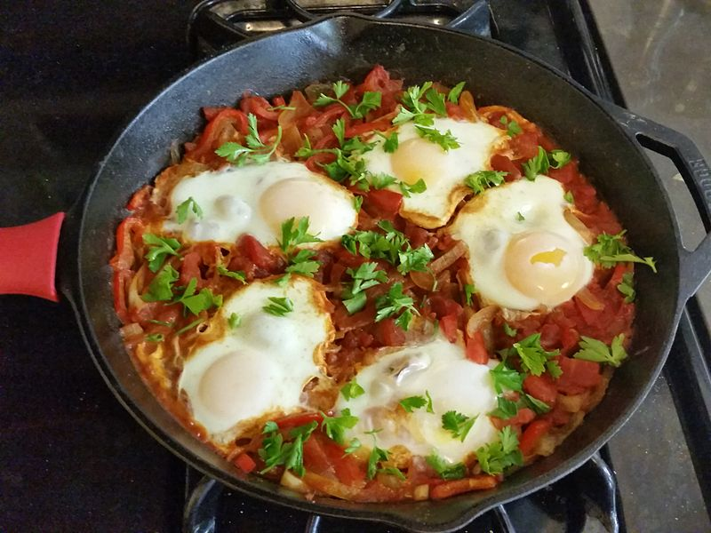

Itamar's Shakshuka
Ingredients
- 4 eggs
-
1 can of crushed Tomatoes OR 3 - 4 medium tomatoes, peeled and crushed
- 2 medium bell peppers, cut into stripes
- 1 small onion OR 0.5 a large onion
- 2 - 3 garlic cloves
- 1 bundle chopped parsley
- 0.5 - 1 tea spoon spicy smoked chilli
- 2 -3 table spoons olive oil
- 1 teaspoon of brown sugar
- Salt and pepper to taste
Preparation
-
In a large pan, on medium heat, fry the onions and peppers in olive oil
until lightly soft.
-
Add the garlic and chilli and continue frying until lightly brown.
-
Pour the crushed tomatoes into the pan, add the salt, pepper and sugar,
and turn up the heat until boiling point.
-
Turn the heat down to a low heat, and simmer the sauce for an additional
6 - 7 minutes, or until reduced.
-
When the sauce has reduced enough, make a small hole for each egg, break
it into the sauce, and cover the pan until the egg whites are visible
and solid.
-
Before serving, sprinkle the chopped parsley on top of the dish. Best
served with bread, especially pita bread or Durum, and some hummus or
Tahini on the side.